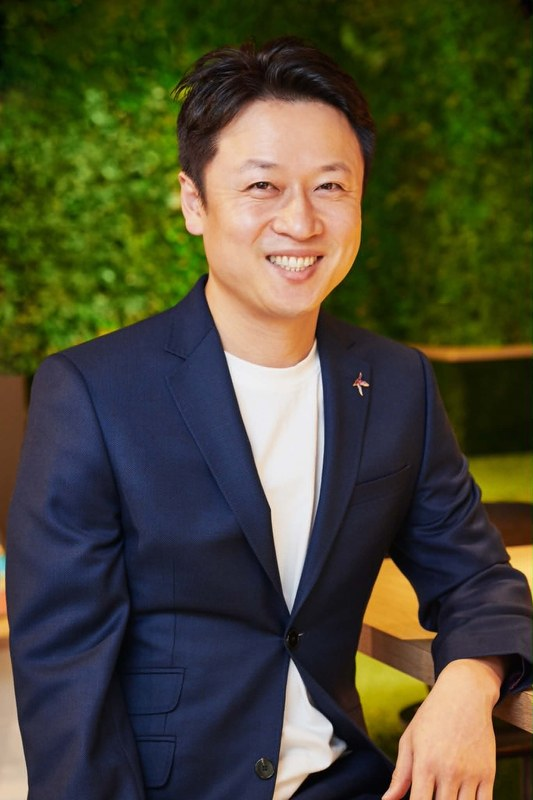
山本 敏行ヤマモト トシユキ
Power Angels CEO ／ 日本エンジェル投資家協会 代表理事
学生時代に米国で起業
ゼロから上場まで導いた人
留学先のロサンゼルスで起業し、Chatworkを上場まで導いた人。「学生で起業ってどう始めるの？」を、リアルに教えてくれるエンジェル投資家。
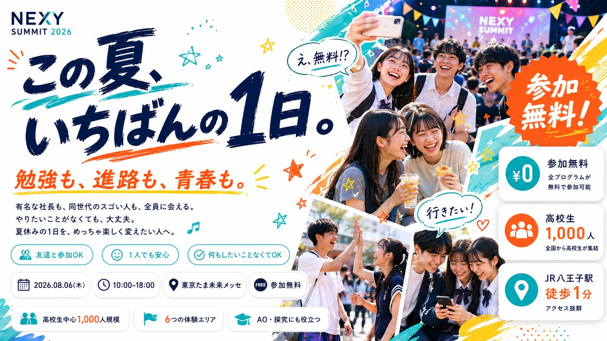
やりたいことがなくても、暇でも、
「なんとなく」でも、大丈夫。
申込締切：2026年8月5日（火） ／ 当日参加も歓迎
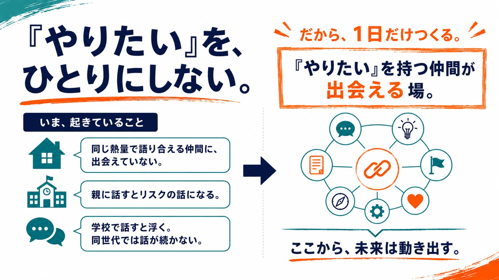
「やりたいことなんて、まだない」
「なんかモヤモヤしてる」
「頑張ってる同世代の話を聞いてみたい」
——そんな気持ちで来て、大丈夫です。
東京たま未来メッセ（東京都立多摩産業交流センター）にて開催。最寄駅はJR「八王子駅」。
6つの体験が並ぶ回遊型フェス。気になるボックスを開いて、当日の中身を確認してください。
D会場・C会場（左半分／右半分の2エリア）で同時並行進行。気になるプログラムへ自由に行き来できる回遊型フェスです。
| 時間 | D会場（メインステージ・1,000名） | C会場（サブステージ・500名） | C会場 右半分（ブース・コミュニティ） |
|---|---|---|---|
| 10:00 – 10:30 | 開幕"やりたい"を持ち帰るための、この1日の使い方。 | ||
| 10:30 – 11:20 | あの人、なんで人気なんだろう？周りに人が集まる人の、思考と習慣の話。詳細を見る | モヤモヤを、言葉にしてみる110分。対話で「やりたい」を発掘するワーク。詳細を見る | ブース ＋ コミュニティ |
| 11:30 – 12:20 | 学校の勉強、大人になっても使うの？「なぜ勉強するのか」に、大人が本音で答える50分。詳細を見る | ||
| 12:20 – 13:00 | ご飯休憩 | ||
| 13:00 – 13:50 | "やりたい"を、ぶつけろ。全国7名の高校生ピッチバトル。プレゼン大会LPへ | 休学・起業・海外"普通"を降りた高校生の、いまの話。詳細を見る | |
| 14:00 – 14:50 | AIが全部やる時代、人間って何すればいい？AIネイティブ高校生3人が本音で語る話。詳細を見る | ||
| 15:00 – 15:50 | その課外活動、総合型選抜のためだけになってない？書類で終わる活動と、面接で光る活動の、決定的な違い。詳細を見る | 日本初・日本最大級の高校生サミットは、どう生まれた？8ヶ月前の"やってみたい"が、1,000人イベントになるまでの舞台裏（Presented by CHEERS）Presented by CHEERS ／ 詳細を見る | |
| 16:00 – 16:50 | 起業・留学、何のためにやる？"やってみた"を、"やってよかった"に変える人の、考え方。詳細を見る | "好きを仕事に"って、実際どう？突き詰めた人たちに、正直な今を聞いてみた50分小助川晴大登壇 ／ 詳細を見る | |
| 17:00 – 17:50 | 親・先生・環境に否定された時、どう動く？「無理」の壁を、突破してきた人たちの、動き方の話。詳細を見る | 君の"ミュートされた やりたい"を、世界へ。発掘した"やりたい"を、参加型で世界へ届ける50分詳細を見る | |
ゲスト10名・学生13名 ＝ 計23名以上が登壇確定（順次追加中）。
※ 登壇者はすごい人ばかりですが、聞きに来る側は「普通の高校生」で大丈夫です。1,000人のうち、特別な実績を持っている参加者は5%未満です。

Power Angels CEO ／ 日本エンジェル投資家協会 代表理事
留学先のロサンゼルスで起業し、Chatworkを上場まで導いた人。「学生で起業ってどう始めるの？」を、リアルに教えてくれるエンジェル投資家。
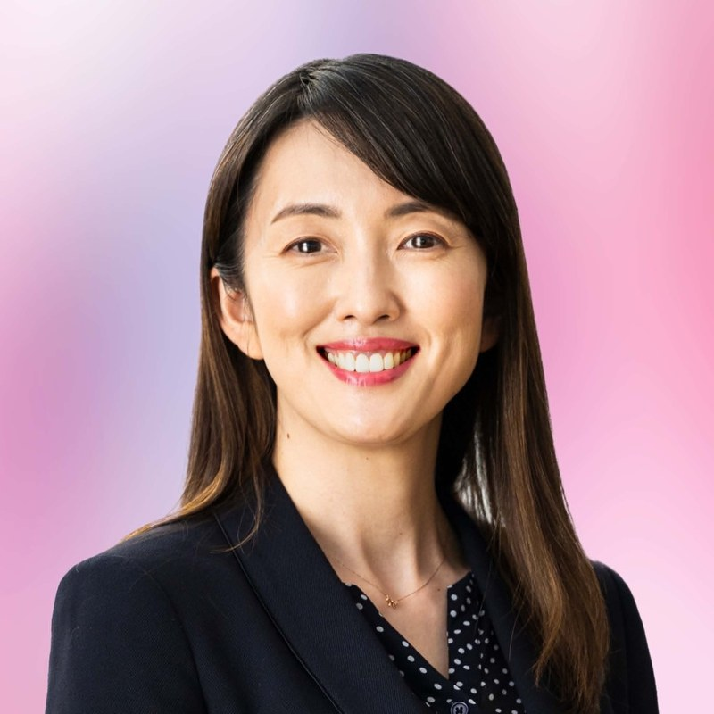
文部科学省 起業家精神推進大使 ／ Prospera Women 日本代表
15年勤めた野村證券を辞めて独立した連続キャリアの持ち主。「やりたいが言葉にならない」あなたの背中を、本気で押してくれる人。
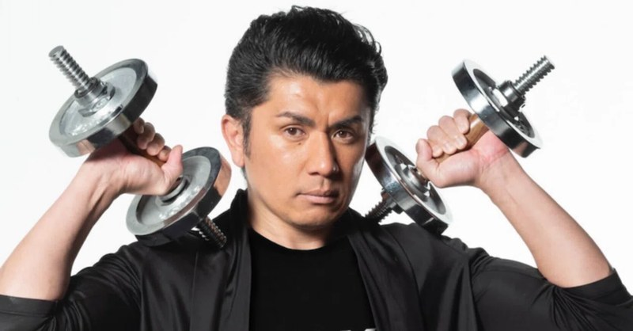
フィットネスD2Cブランド「VALX」創業
キーエンスを3年でクビになった男が、フィットネスD2Cで月商1億円達成。「日本一情熱的な社長」と呼ばれる、本気の経営者の話が聞ける。
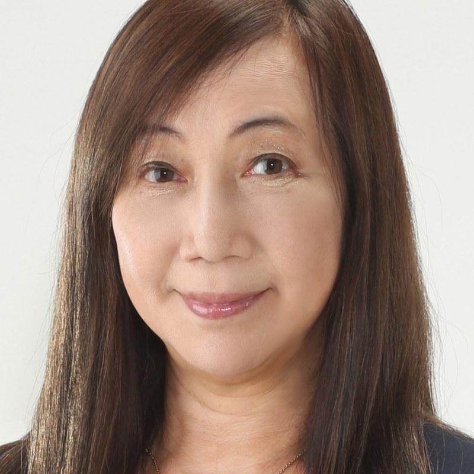
東京大学卒 ／ 日本IBM出身 ／ MIT技術政策修士 ／ 東大博士（学術）
慶應女子高→東大→MIT→日本IBMでシステム開発。現在は特命教授として科学技術政策を研究しつつ、上場企業(JCRファーマ)の独立社外取締役も務める。「文理を横断してキャリアを積む」のリアルが聞ける。
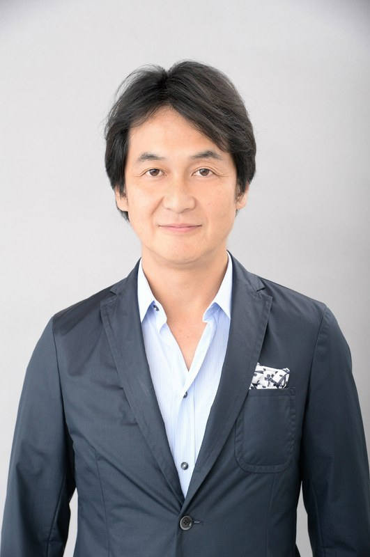
慶應義塾大学SFC 特別招聘教授
みんなが使った「iモード」「おサイフケータイ」を作った人。世界を変えるサービスはどう生まれるか、現役の大企業トップから直接聞ける。
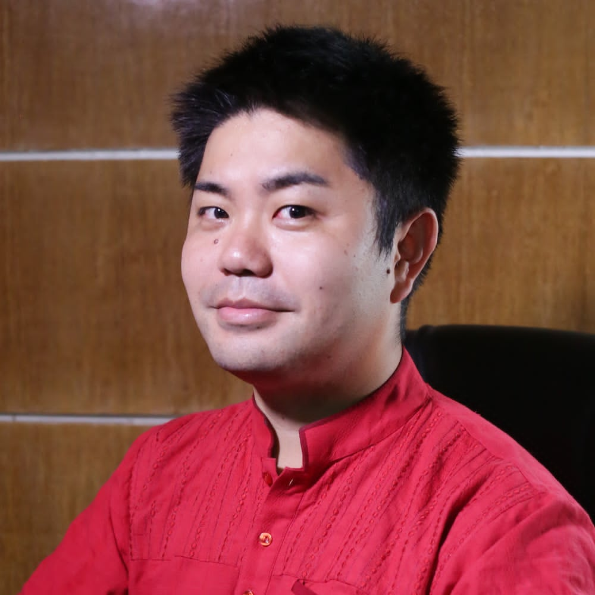
プレゼン大会 メンター ／ JICA出身
プレゼンの天下一武道会で日本一を獲った男。途上国14カ国の3万人の子どもに教育を届けてきた起業家。NEXYプレゼン大会の登壇者を直接コーチング。
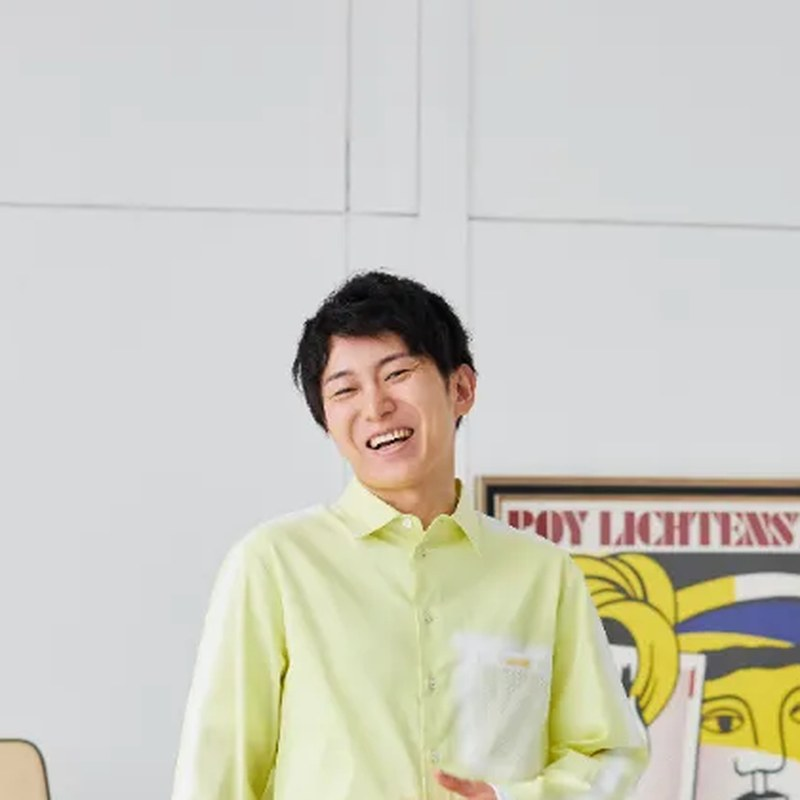
心理学ベースの才能言語化メソッド開発
「あなたの強みは何？」と聞かれて答えられない高校生に、自分の才能を一緒に言語化してくれる心理学のプロ。話すと、自分の輪郭がはっきり見える。
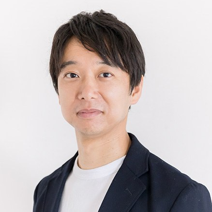
シリアル・アントレプレナー ／ エンジェル投資家
起業→売却→また起業を2回繰り返した連続起業家。表に出ない労力とリターン、失敗と成功の境界線が、リアルな数字で聞ける。
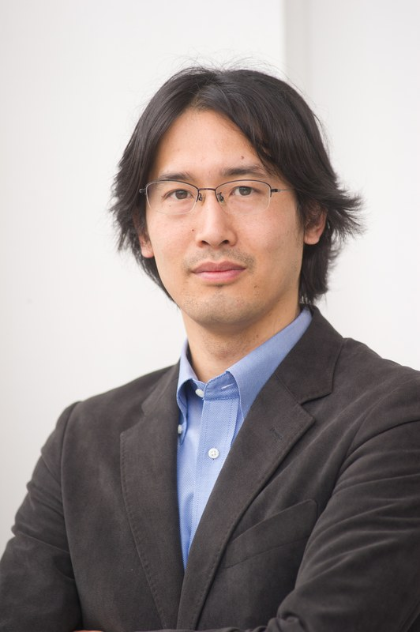
経営戦略・国際経営 ／ 元マッキンゼー
SFCを目指す高校生は必読の『経営戦略原論』を書いた人。元マッキンゼーが世界9カ国で磨いた「戦略の作り方」を、直接教えてもらえる。
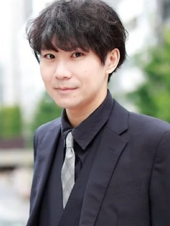
広告事業 × 次世代育成 ／ 学生YouTube番組「olly club」「ON MUTE」仕掛け人
LINEヤフー・SmartNewsの正規代理店として広告事業を回しながら、学生を主役にしたYouTube番組「olly club」「ON MUTE」を仕掛ける経営者。ウォールストリートジャーナルAWARD受賞、「メディアで挑戦する」のリアルが聞ける。
※ 順次発表中。写真・追加プロフィールは決定次第更新します。
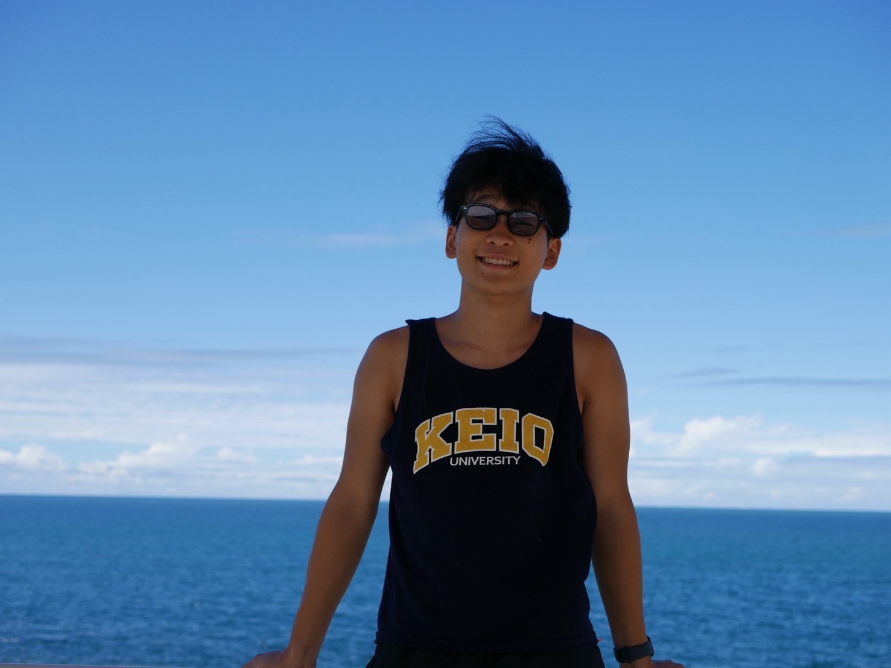
株式会社 The Bedrock Space Group ／ 学生団体ミラコエ
慶應SFCで「宇宙×政治」で起業した連続起業家。スキー世界大会出場経験もある、行動と思考の両輪を持つ同世代。
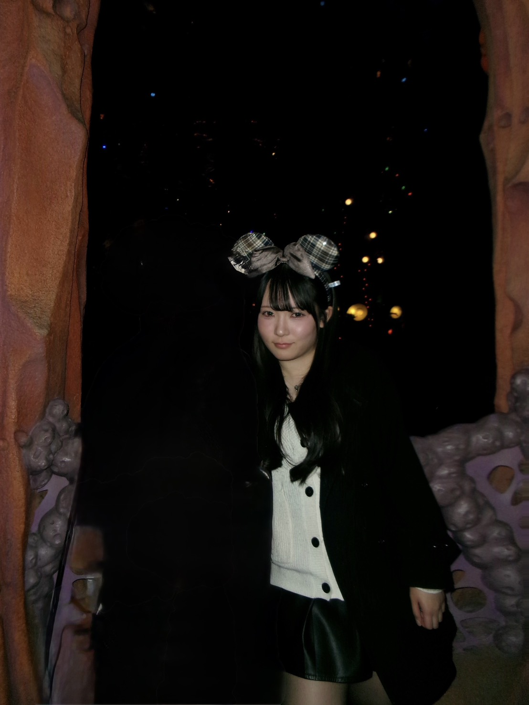
309人の学生が在籍中の沖縄県高校生団体 FLARE 初代代表
高2で309人規模の学生団体を作り、1万人イベントの実行委員長も務めた巻き込み力の天才。SFC合格後も、人を動かす方法を磨き続ける。
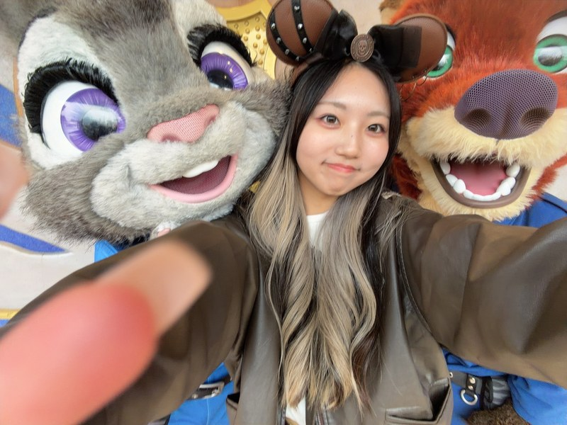
株式会社Challink 代表
「高校生のやってみたい」を本気で社会実装するため、株式会社を設立した行動の人。「悩む前に行動！」がモットー。
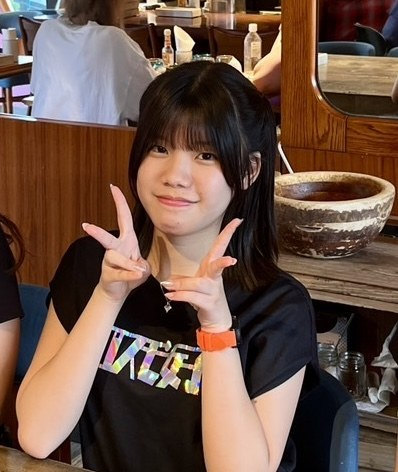
一般社団法人チームゆら 理事（プロジェクトリーダー）
小5で「宇宙日本食を作る」と決め、中2で法人化、クラファン500万円達成。一つのアイデアを9年で本物にした中学生起業家。
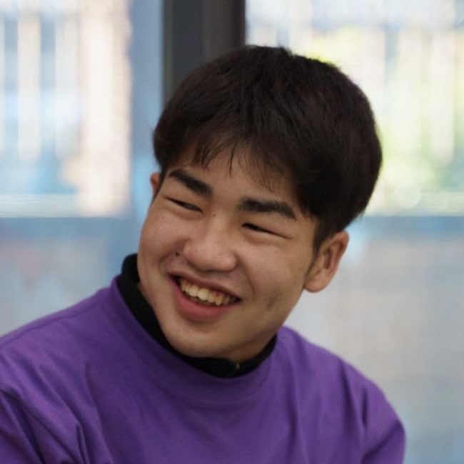
三世代教育プロジェクト BridgE³ 創設・代表
「選んでいる」のではなく「選ばされていた」と気づき、徳島から世代を超えた対話の場を作る挑戦者。サマースクールで価値観が変わった経験を語る。
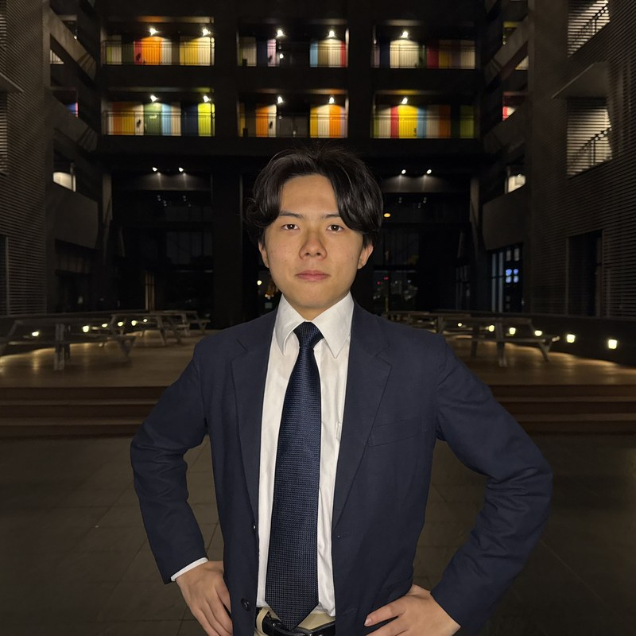
Challase株式会社 代表取締役CEO
中2でNPO役員、中3でChatwork創業者と会社を共同創業した連続起業家。同世代の感覚で経営する話が聞ける。
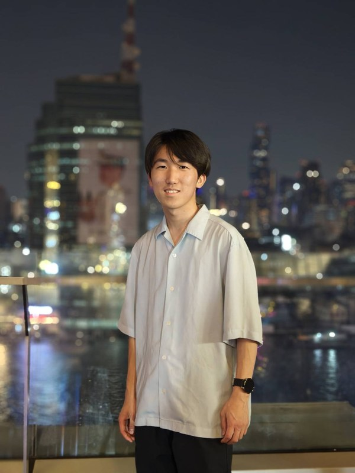
学生団体EToE 代表
海外大進学・eスポーツ・メタバース教育・生徒会改革・模擬国連を同時並行する、多面的すぎる挑戦者。「全部やる」の楽しさが聞ける。
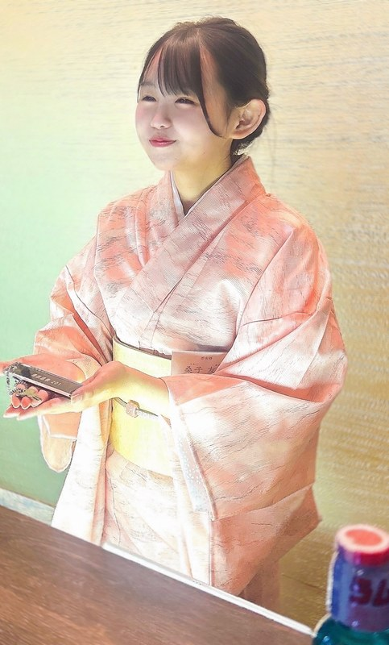
湯端温泉 若女将 ／ 群馬県高校生リバースメンター 3期生
温泉宿の若女将として、群馬県知事に政策提言し、施策化までこぎつけた高校生。「実家を使って社会を動かす」体験が聞ける。
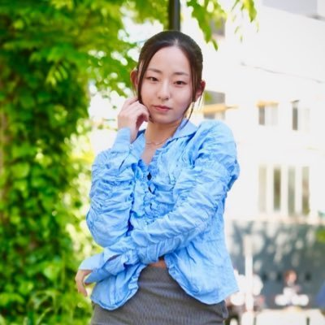
株式会社JYUNIHITOE 代表取締役CEO
「一重」をコンプレックスから強みに変えるコスメブランドを起業した高校生CEO。SusHi Tech Teen Challenge グランプリ受賞。
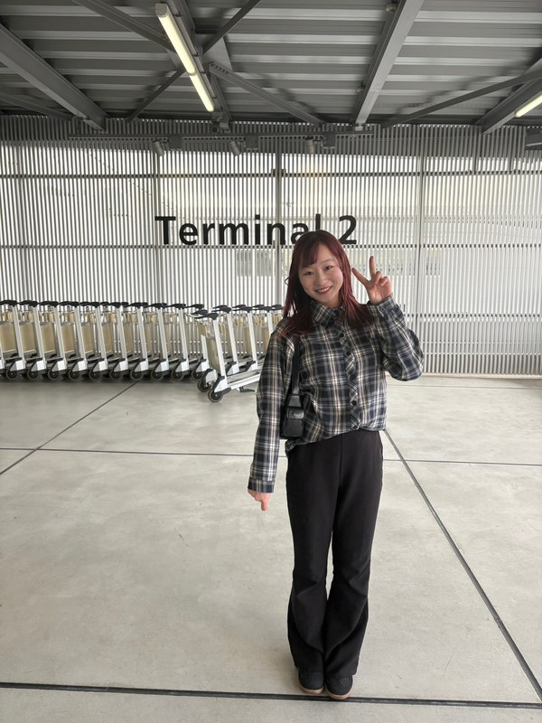
tomoni ／ 親子コミュニティ運営
高校生で世界一周し、フリースクール運営を目指して親子コミュニティを実践する19歳。「学校に行かない」選択をした人の本音が聞ける。
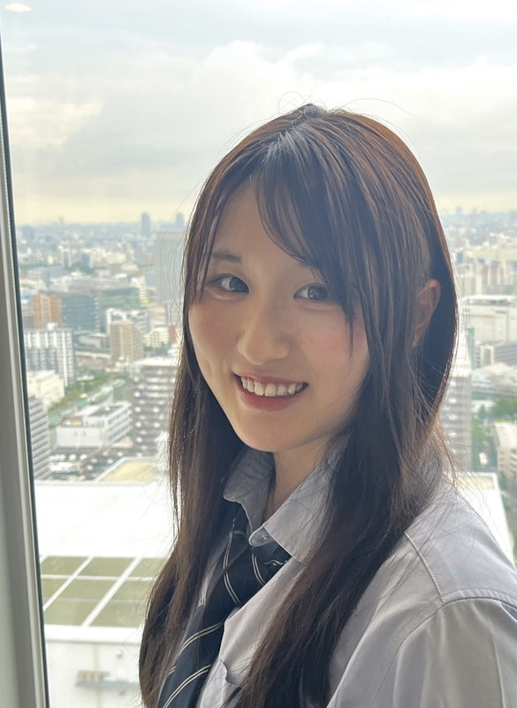
孫正義育英財団 第9期 ／ 未踏ジュニア採択
孫財団9期、未踏ジュニア採択、EGOI銅メダル、東大松尾研GCI修了の超AIエリート高校生。「人のためのAI」を本気で作る話が聞ける。
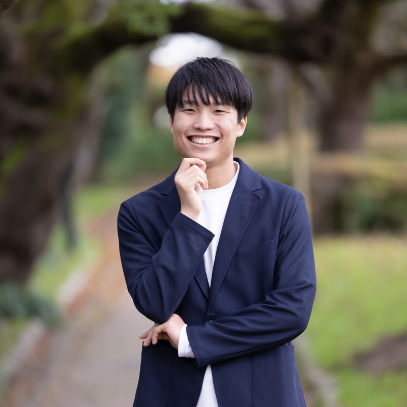
株式会社ネルフィン 社長 ／ 株式会社Brownie CEO
高校在学中にAI自動検品システムを61社の町工場に展開した、地方発のAI起業家。「地方×AI」のリアルが聞ける。
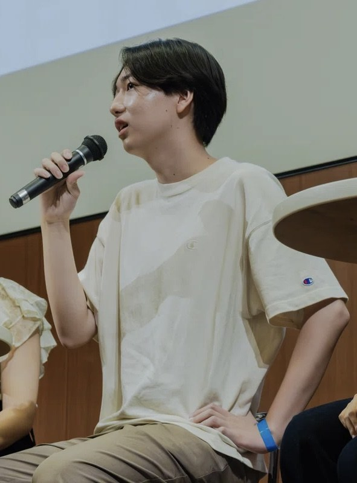
AIプロダクト マーケティング ／ 連続起業家
NFT取引1.5億・eスポーツ事業譲渡・SNS運用月500万円売上の、超先行きの連続起業家。高校生で経営の最前線にいる話が聞ける。
※ 登壇者は順次発表予定です。最新情報は Instagram @nexy.hub にて。
プレゼンの天下一武道会と称される「ICC FUKUOKA カタパルト・グランプリ」第1回優勝者が、プレゼン大会の通過者6名向けにメンタリングを実施。
認定NPO法人e-Education ／ 株式会社e-Education 代表
1986年生まれ。早稲田大学法学部在学中に、同大学の後輩とともに NPO法人 e-Education の前身を設立。卒業後、JICA（国際協力機構）で東南アジア・大洋州の教育案件を担当。2013年に退職、e-Education の活動に専念。2014年7月に代表へ就任。
バングラデシュをはじめ途上国14カ国で3万人の中高生に映像授業を届けてきた。2017年、プレゼンの天下一武道会と称される「ICC FUKUOKA」の第1回カタパルト・グランプリで優勝。以後、大手企業の経営者から大学生まで幅広い層の「話し方」改善を支援。
著書：『100%共感プレゼン』（2020年・ダイヤモンド社）
高校生がメインですが、大学生・社会人も参加歓迎です。
大学生は無料、社会人は¥3,000でご参加いただけます。一歩先の同世代として、挑戦の相談相手として、企業の方も学生と対話しに来てください。
特別な実績も、大きな夢もない高校生が、この1日をどう過ごすのか。
都内私立高校2年生・Sさんの1日
10:00友達に誘われて来た。特にやりたいことは、なかった。朝早くて眠かった。会場に着いたら、全国から来た同世代がたくさんいた。「みんな凄そう」と思って、最初は圧倒された。
13:00たまたま座ったセッションで、自分と同じ高校2年生の登壇者が話していた。「自分もモヤモヤしてた」と言っていた。なんだか、少し勇気が出た。
15:00ワークショップに参加した。隣の席の高校生と話した。「実は自分もそう思ってた」ということが、いくつもあった。
18:00帰り道、少しだけ何か変わった気がした。
「特に何か始めたわけじゃない。でも、なんか毎日がちょっとだけ違う気がする」
NEXY Summit 2026 は、次世代の挑戦者を応援する企業・団体の支援によって実現されます。
※ 協賛企業は順次発表予定です。協賛のご相談は info@nexyhub.jp まで。
Stay Connected
登壇者の追加発表、当日のタイムテーブル、参加者向け事前情報、運営メンバーの裏側まで。
NEXY Summit 2026 の最新情報は、公式Instagramで最初にお届けします。
「特にやりたいことがない」でも、来ていい。
「暇だから」でも、来ていい。
「友達に誘われた」でも、来ていい。
来た理由なんて、なんでもいい。
1日を過ごしてから、決めればいい。
申込締切：2026年8月5日（火） ／ 当日参加も歓迎
主催：学生団体 NEXY ／ 代表：小助川 晴大
Powered by NEXY Community
株式会社 The Bedrock Space Group 共同創業 ／ 学生団体ミラコエ
About
政治・宇宙をメインに事業をつくることを通して、社会や人を幸せにできるよう頑張っています。
話せること
AO・総合型選抜系 ／ 起業・事業 ／ 海外・グローバル ／ 自己探求・問い ／ 人間関係・巻き込み ／ 哲学系（AI時代における人とは）
これまでの活動・実績
全日本スキー選手権出場 2022・2023 学生団体「ミラコエ」を創設し、教育系事業を連続的に立ち上げ 株式会社 The Bedrock Space Group を共同創業
309人の学生が在籍中の沖縄県高校生団体 FLARE 初代代表
About
高校2年生で沖縄県高校生団体FLAREを立ち上げ、300人規模の団体へと成長させた。代表として活動する中で、高校生のみで企画・運営するプロジェクト「海風祭2025」を実施し、国際通りを貸し切った1万人規模のイベントの実行委員長を務めた。その後、総合型選抜で慶應義塾大学環境情報学部に進学。活動を通して、挑戦する人やリーダーが責任や不安を一人で抱え込み、孤立してしまう現状に課題意識を持つようになった。現在は「挑戦が孤立しない社会」をテーマに、出身地・沖縄の相互扶助文化である「模合」の研究や、若者同士が支え合うコミュニティづくりに取り組んでいる。また、営業インターンやAO塾講師としても活動中。
話せること
AO・総合型選抜系 ／ 自己探求・問い ／ 人間関係・巻き込み
これまでの活動・実績
・沖縄戦の歴史継承活動（白梅学徒隊に関するフィールドワーク・ガイド活動） ・こども食堂運営プロジェクト リーダー ・沖縄県高校生団体FLARE 創設者・初代代表（現在所属309名） ・高校生主体で企画・運営した1万人規模イベント「海風祭2025」実行委員長 ・高校生向けイベントや交流会を複数企画・運営 ・AO入試で慶應義塾大学環境情報学部に合格 ・営業インターンに従事 ・AO・総合型選抜専門塾にて講師として活動 ・「挑戦が孤立しない社会」をテーマに、沖縄の模合文化を活かしたコミュニティづくりを研究中
株式会社Challink 代表
About
飛行機のお尻が大好きな高校3年生の久野美恋彩です。「高校生のやってみたいを実現できる社会へ」をテーマに活動しています。探究活動に取り組んできた中で、学生の学びの場が地域に不足しているという課題を見つけました。そこから、自ら株式会社を設立し、企業や地域の方々への取材・訪問を通して、高校生の学びの場を増やすという挑戦をしています。教育やキャリア形成に関心があり、実際に多くの大人や起業家の方々と対話を重ねながら学びを深めています。人との出会いや対話を大切にし、「悩む前に行動！」をモットーに、新しい価値を生み出せる人を目指しています。
話せること
起業・事業 ／ 人間関係・巻き込み
これまでの活動・実績
高校入学後から地域活性化に関心を持ち、探究活動に積極的に取り組んできました。国内外問わず、カンボジアや福島など学びを見つけたら直ぐに飛び込んで学ぶという行動重視で活動しています。また、高校生と企業・地域社会をつなぐことを目的として株式会社を設立し、栃木県内外の企業や団体へのヒアリング・取材を実施しています。現在1プロジェクト始動開始しました。さらに、起業家イベントやビジネスコンテストへの参加を通して事業構想を磨き、多様な世代との対話を重ねてきました。高校生の視点を活かしながら、社会課題の解決に向けて実践的な挑戦を続けています。
一般社団法人チームゆら 理事（プロジェクトリーダー）
About
小学5年生のときに、大好きな地元・静岡県産のみかんを使った宇宙日本食「静岡みかんゼリー」の開発を始める。小学6年生では、静岡県の大学生や社会人とともに宇宙日本食開発チーム「チームゆら」を設立。中学1年生で法人化し、「一般社団法人チームゆら」プロジェクトリーダー（理事）となる。中学2年生で株式会社ワンテーブルと契約を締結し、2025年夏に「静岡みかんゼリー」の本製造を迎える。
話せること
起業・事業 ／ 宇宙食 ／ クラウドファンディングで500万円達成した話
これまでの活動・実績
2022年〜：JAXA様（TV番組「サンドイッチマン＆芦田愛菜の博士ちゃん」企画） 2023年5月：野口聡一 元・宇宙飛行士との対面（TV番組「博士ちゃん」企画） 2023年10月：一般社団法人チームゆら設立 2023年10月：静岡市主催「SDGsユースサミット」発表者として登壇、静岡市・難波市長に提案 2024年7月：株式会社ワンテーブル様とOEM契約締結 2025年1月〜2月：CAMPFIREにて製造資金クラウドファンディング 500万円達成 2025年2月：静岡STEAMフューチャーアカデミーのトップ受講生として、ミネソタ大学で英語プレゼン 2025年7月：株式会社ワンテーブル様の工場で「静岡みかんゼリー」製造開始 2025年8月：大阪・関西万博 大阪ヘルスケアパビリオンで毎日プレゼンテーション予定 【受賞歴】 山崎賞（第39回・第41回優良賞）／ 鈴木賞（第70回）正賞 ／ 自然科学観察コンクール（第64回）佳作 ／ 国際探究活動発表交流会 総合グランプリ ／ 静岡倶楽部「科学研究奨励賞」 ほか 「サンドウィッチマンと芦田愛菜の博士ちゃん」はじめメディア多数出演
三世代教育プロジェクト BridgE³ ／ 学生団体NEXY ／ 任意団体Next Step
About
徳島県の進学校に通う高校3年生。高校2年生の夏に参加した7泊8日のサマースクールをきっかけに、それまで当たり前だと思っていた価値観が大きく揺さぶられる。その経験から、自分自身が「選んでいる」のではなく、「用意された選択肢の中から選ばされていた」ことに気づき、「知らないまま選ぶ社会を壊す」をミッションに三世代教育プロジェクトBridgE³を設立。現在は、「人が一歩踏み出そうとするとき、最も大きな壁となるものは何か」という問いに関心を持ち、高校生や社会人へのインタビュー・調査を通じて探究を続けている。人生のテーマは、「心から笑える人が育つ環境を創る」こと。
話せること
自己探求・問い ／ 人間関係・巻き込み ／ 哲学系（AI時代における人とは） ／ 教育
これまでの活動・実績
・三世代教育プロジェクト「BridgE³」創設・代表 ・高校生、大学生、社会人をつなぐ対話型コミュニティを運営 ・三世代交流イベント「アトサキ」累計参加者122名以上 ・HLAB TOKYO 2025参加 ・U-18サミット2026参加 ・学生団体NEXY プロジェクトマネージャー ・「知らないまま選ぶ社会を壊す」をテーマに、高校生の主体的な選択を支える活動を実践 ・徳島県を拠点とし、鳥取県にも活動を拡大 ・課外活動を始めて一年未満
Challase株式会社 代表取締役CEO
About
2009年11月11日、千葉県松戸市出身。2019年から約3年間、アメリカ・ニュージャージー州に滞在後、小学5年生で英検2級を取得。グローバルな経験を活かし、世界規模の環境イベント等にて店舗運営やパンフレット制作・日英翻訳を経験。その後、NPO法人と教育系企業にて執行役員、事務局長、営業・技術責任者を歴任。文部科学省をはじめとする教育機関や自治体の協力を得て、複数の探究学習イベントや中高生向けアクセラプログラムの立ち上げ及び推進に従事。その後、総フォロワー数100万人を超えるインフルエンサーグループでの映像ディレクション（企画・撮影）や営業・アライアンス業務に携わる。
2024年3月、中学2年生でChatwork創業者・山本敏行氏とChallase株式会社を共同創業し、代表取締役CEOに就任。「みんながワクワクする社会を創る」というビジョンを掲げ、大規模な音楽フェスやファッションショー、YouTube番組、アイドルグループ等の企画制作・プロデュースを手がける。その他、縦型ショート動画や若年層を中心としたマーケティング支援や企業向けAI導入支援等も展開し、16歳にして単月売上2,700万円を達成。
話せること
AO・総合型選抜系 ／ 起業・事業 ／ 海外・グローバル
公式サイト
学生団体EToE 代表
About
2007年生まれ、東京出身。小学4年時に東京学芸大学附属小学校から沖縄のIB校へ転校。沖縄での原体験から、現在は「誰もが自分の可能性を発揮できる教育」のあり方を探求している。都立国際高校に入学後は、eスポーツで得た経験と技術をもとに、メタバースを活用した教育プログラム「メタロレア」を開発し、全国で展開。さらに学生団体「EToE」を設立し、多様な学びの場づくりにも取り組む。活動は多岐にわたり、琉球史・文化やマルクス経済学の研究、生徒会での伴走支援、YouTube、動画編集、デザイン、模擬国連、ハッカソンなど、分野を問わず多面的に挑戦を続けている。
話せること
AO・総合型選抜系 ／ 不登校・休学・違う道 ／ 海外・グローバル ／ 自己探求・問い ／ 人間関係・巻き込み ／ 哲学系（AI時代における人とは） ／ 社会・環境・経済思想
これまでの活動・実績
【教育・学生団体】 ・学生団体EToE 代表：メタバース活用の教育プログラム「メタロレア」開発・運営、ハイブリッド形式の教育イベント主催、学生交流Discord運営 ・第68回 旺文社学芸サイエンスコンクール スタートアップ部門 高校生の部 銅賞（2025年3月） ・SusHi Teck Tokyo 2025「出世魚ピッチ」一次審査通過（2025年4月） 【生徒会】 ・東京都立国際高等学校 生徒会長：生徒総会・中央議会の刷新、ブレザー着用義務緩和 ・第9回 日本生徒会大賞 高校生・個人の部 奨励賞（2025年6月） ・現役引退後も生徒会の伴走支援 【eスポーツ／ゲーミング組織】 ・Gaming Organization SkyGold 代表（〜2025年5月） ・X最大フォロワー3,000人超、計4社とスポンサーシップ契約、日本学生eスポーツ協会認定団体 ・30以上のオンラインイベント主催（2021〜2024年）、佐倉市・柏市の自治体と協力 【国際／模擬国連】 ・ハーバード模擬国連など参加 ・明治学院大学民間外交サークル幹部（2024年〜）：複数の大使館訪問、大使館主催イベントのボランティア統括 ・国連大学ミネルバ大学主催イベント、文科省主催IBコンソーシアムなどでスピーカー登壇 【創作・受賞歴】 ・第67回 旺文社学芸サイエンスコンクール 旺文社 赤尾好夫記念賞（銀賞）詩部門 高校生の部（2024年3月） ・動画編集・デザインの受託、作詞作曲（ボカロ）・Web小説執筆 【大学受験 合格校】 University of California, San Diego／University of Minnesota Twin Cities／University of Edinburgh／University of Manchester（進学）／University of Bristol／慶應義塾大学 環境情報学部（夏秋AO）
湯端温泉 若女将 ／ 群馬県高校生リバースメンター 3期生
About
群馬県の小さな温泉宿で若女将として活動。接客や宿の仕事を通して、「手術痕が気になって温泉に入れない」「大浴場に不安がある」といった声を聞いたことをきっかけに、誰もが安心して温泉を楽しめる環境づくりについて探究を始める。現在は、貸切温泉や入浴着の普及、湯治文化の認知拡大をテーマに活動。利用者へのアンケート調査や行政・専門家へのヒアリングを重ねながら群馬県への政策提言を実施。提言内容の一部は県の施策として実現し、実際の情報発信や環境整備にもつながった。温泉の魅力を次世代へつなぎ、多様な人が温泉を楽しめる社会の実現を目指している。
話せること
起業・事業 ／ 不登校・休学・違う道 ／ 自己探求・問い
これまでの活動・実績
【高校】 ・群馬県の温泉宿で若女将として活動 ・群馬県高校生リバースメンター 3期生として、行政・専門家へのヒアリングを行い、群馬県知事へ政策提言を実施（一部施策化） ・全国マイプロジェクトアワード「全国ロールモデル賞」受賞 【中学】 ・高崎市理科自由研究発表会 最優秀賞 ・中学校人権作文コンテスト群馬県大会 群馬県教育委員会教育長賞 【メディア掲載・出演】 ・NHK「おはよう日本」「ほっとぐんま630」 ・TBS「THE TIME,」 ・テレビ朝日「グッド！モーニング」 ・日本経済新聞 ほか
株式会社JYUNIHITOE 代表取締役CEO
About
高校入学後に探究学習と出会い、さまざまなイベントやプロジェクトに参加。その中で、学校だけでは出会えない多様な価値観を持つ人々とつながり、社会課題や新しいアイデアについて語り合う面白さに気付く。その後、ルッキズムや自己肯定感について探究を深め、ネガティブに捉えられがちな一重を強みに変えるコスメブランド「JYUNIHITOE」を立ち上げる。現在は「一重のままの選択肢を世の中に届ける」をミッションに事業やイベント、情報発信を通して、多様な美しさや価値観が尊重される社会づくりに挑戦中。
話せること
起業・事業 ／ 自己探求・問い
これまでの活動・実績
【株式会社JYUNIHITOE 代表取締役CEO】 「一重のままの選択肢を世の中に届ける」 【JYUNIHITOE 受賞・登壇】 ・STAPS 7期 最優秀賞受賞 ・SusHi Tech Teen Challenge 2026 グランプリ ／ ツクリエ様企業賞受賞 ・Tongali アイデアピッチコンテスト2025 名古屋銀行賞・SMBC日興証券賞 ・JUMP OUT Project 1期生 ・その他登壇多数 【メディア掲載・出演】 Abema NEWS「わたしとニュース」／NHK「まるっと」／中日新聞／読売新聞／日本経済新聞 ほか 【その他探究活動】 ・Tongali junior competition 2024 最優秀賞受賞 ・全国高校生SBP交流フェア 伊勢市長賞受賞 ・名城大学REALIZE AWARD EXPRESSION賞受賞 ・名城大学附属高等学校 探究Day 総合司会
tomoni ／ 親子コミュニティ運営
About
女子高校生で世界一周に行き、夢は日本列島を愛で繋ぎ、日本の子ども達を幸せにすること。そのために10年以内にフリースクールを運営して親子関係、そして子ども達の自立を目指して現在親子コミュニティの運営をしたり、フリースクールに行ったりして学んでいます。
話せること
不登校・休学・違う道 ／ 海外・グローバル ／ 人間関係・巻き込み
これまでの活動・実績
高校卒業前に世界一周に出発。各国の学校を視察しながら、日本の子どもたちを幸せにするためのオンラインコミュニティを運営。フリースクールでの学びと親子関係の探究を通じて、10年以内にフリースクール開設を目指して活動中。
孫正義育英財団 第9期財団生 ／ 未踏ジュニア採択
About
渋谷教育学園幕張高校3年生。AIやHCI（Human-Computer Interaction）に興味を持ち、「人のためになるAI」をテーマに研究とプロダクト開発の両方に取り組んでいます。趣味は料理と登山。
話せること
海外・グローバル系 ／ 自己理解・問いづくり系 ／ 哲学系
これまでの活動・実績
・日本人工知能学会 JSAI 2025 に投稿 ・情報科学の達人 6期生 優秀修了 ・未踏ジュニア採択 — 自然言語で画像編集できるAIアプリ「Gen5」を開発 ・進路選択や自己理解を支援するAIアプリ「まいるす」を開発 ・孫正義育英財団 第9期財団生 ・EGOI 2025 銅メダル ・東京大学松尾研究室 GCI ／ Deep Learning 基礎 ／ 世界モデル講座 修了 ・AI関連企業・大手商社でインターン ・高校でAIに関する講座を企画・実施
株式会社ネルフィン 社長 ／ 株式会社Brownie CEO
About
富山県高岡市出身。AI自動検品システムを手がける株式会社Brownie CEO、AI事業を展開する株式会社ネルフィン社長を務めています。中学2年から動画編集の個人事業で活動を始め、高校時代に起業。「AI」と「地域課題解決・地域活性」を軸に活動しています。
話せること
総合型選抜系 ／ 起業・ビジネス系
これまでの活動・実績
高校在学中に株式会社Brownieを設立。町工場の現場ヒアリングを重ねて開発したAI自動検品システム「Ai-Capt」を全国61社以上の工場に展開しています。高校卒業を機に株式会社ネルフィンを新たに設立し、AIコンサルティングやシステム開発を通じて、企業のAI活用支援と地域課題の解決に取り組んでいます。
AIプロダクト マーケティング ／ 連続起業家
About
高校生ながら、NFT・eスポーツ・SNS運用代行・人事・経営管理など、多岐にわたる事業領域で実績を持つ連続起業家。現在はAIプロダクトのマーケティングに取り組む。
話せること
起業・ビジネス系 ／ 自己理解・問いづくり系 ／ 人間関係系 ／ 哲学系 ／ マーケ・SNS・採用・働き方など
これまでの活動・実績
・NFTコレクションを立ち上げ、取引総額1.5億円 ・eスポーツチーム事業を設立、1年半後に事業譲渡 ・SNS運用代行で、ミリオン再生／月500万円以上の売上創出／採用応募数百件創出 ・スタッフ200名規模の会社で人事責任者 ・年商20億規模の会社で経営管理。月1,000万円弱の固定費カットを実現 ・読売新聞ほかメディア掲載
Power Angels CEO ／ 日本エンジェル投資家協会 代表理事
About
1979年3月21日、大阪府寝屋川市生まれ。大阪桐蔭高校・中央大学商学部卒。在学中の2000年、ロサンゼルス留学中にEC studioを設立。2004年に法人化。
主な実績
・2011年 ビジネスチャット「Chatwork」リリース
・2012年 Chatwork株式会社に社名変更
・2018年 CEO退任、その後米国事業に専念
・2019年 東証マザーズ（現グロース）に上場
・2020年 Power Angels CEO就任
・2023年 一般社団法人日本エンジェル投資家協会 代表理事就任
文部科学省 起業家精神推進大使 ／ Prospera Women 日本代表
About
オリエンタルランドで店舗管理・人材育成・東京ディズニーシー立ち上げに従事。カルチュア・コンビニエンス・クラブ、野村證券Financial Advisor（15年）を経て、2020年01Boosterに参画し有楽町SAAI立ち上げ・運営に従事。2024年4月独立、Fleurinary設立。
主な活動・実績
・株式会社Fleurinary 代表取締役（2024年〜）
・Globis経営大学院 MBA取得
・Prospera Women 日本支部代表
・All Bridge Corporation 社外取締役
・文部科学省 起業家精神推進大使
・女性起業家育成プログラム支援
・高校生向け起業家教育に従事
フィットネスD2Cブランド「VALX」創業
About
1975年10月11日、群馬県出身。群馬県立高崎高校・法政大学経営学部卒。1998年キーエンス入社、3年で退社。グルメブログを経て、2006年ウェブ制作会社「レバレッジ」を設立。
主な実績
・2006年 株式会社レバレッジ（現VALX株式会社）設立
・2016年 フィットネス業界サイト運営開始
・2019年 フィットネスD2Cブランド「VALX」立ち上げ
・VALXは10ヶ月で月商1億円達成
・「日本一情熱的な社長」として講演活動も多数
科学技術政策 ／ 技術経営 ／ 医療バイオのイノベーション論
About
慶応義塾中等部、慶應義塾女子高校卒。東京大学卒。日本IBMにてシステムやオブジェクト指向型言語を開発。マサチューセッツ工科大学技術政策プログラムにて理学修士取得。東京大学大学院工学系研究科先端学際工学専攻にて博士（学術）取得。現在、山口大学大学院技術経営研究科の特命教授。専門は科学技術政策・技術経営・医療バイオのイノベーション論等。
主な実績
・JCRファーマ株式会社 独立社外取締役
・公益社団法人日本工学アカデミー 理事
・特定非営利活動法人 JACFA 理事（ひきこもりの若者を支援）
・公益社団法人 3.11震災孤児遺児文化・スポーツ支援機構 常任理事
・公益財団法人 川村育英会 理事（工学系の学生の奨学金を支給）
・公益財団法人 U.S.-Japan Council 評議員（日米の橋渡し）
慶應義塾大学SFC 特別招聘教授
About
1965年3月17日生まれ。早稲田大学政治経済学部卒、米ペンシルバニア大学ウォートン経営大学院（MBA）修了。東京ガス入社後、1997年NTTドコモへ。1999年「iモード」立ち上げ、その後「おサイフケータイ」など多数のサービスを世に送り出した。
主な実績
・NTTドコモ「iモード」「おサイフケータイ」立ち上げ
・2005年 NTTドコモ執行役員、2008年退社
・慶應義塾大学大学院 政策・メディア研究科 特別招聘教授
・2021年6月 株式会社KADOKAWA代表取締役社長就任
・株式会社ドワンゴ代表取締役社長CEO
プレゼン大会 メンター ／ 著書『100%共感プレゼン』
About
1986年生まれ。早稲田大学法学部在学中に同大学の後輩とともにNPO法人e-Educationの前身を設立。卒業後JICAで東南アジア・大洋州の教育案件を担当。2013年JICA退職、2014年7月にe-Education代表へ就任。
主な実績
・バングラデシュをはじめ途上国14カ国で3万人の中高生に映像授業を届ける
・2017年 ICC FUKUOKA「カタパルト・グランプリ」第1回優勝
・Forbes 30 Under 30 Asia (2016)
・著書『100%共感プレゼン』（2020年・ダイヤモンド社）
・NEXY Summit 2026 プレゼン大会 メンター
心理学ベースの才能言語化メソッド開発
About
心理学をベースに人々の「才能」や「強み」を言語化する才能診断を延べ1,700名以上に実施。自身の才能をサービスに変える起業スクール「TALENT PRENEUR」を運営。
主な活動
・才能診断 1,700名以上に実施
・起業スクール「TALENT PRENEUR」主宰
・心理学ベースの「才能」言語化メソッド開発
・才能をサービスへ変える支援活動
シリアル・アントレプレナー ／ エンジェル投資家
About
2社の会社売却・事業売却の経験があるシリアル・アントレプレナー。現在はSailStep株式会社 代表取締役として、大手企業向けの新規事業立ち上げ支援、スタートアップ数社へのエンジェル投資も行っている。
主な実績
・2015年 OurPhoto株式会社（写真撮影サービス）創業
・2020年 株式会社うるるに事業売却
・2021年 教育EC事業を創業
・2022年 株式会社GAKKEN CC（学研グループ）に売却、取締役就任
・SailStep株式会社 代表取締役
・大手企業向け新規事業支援、スタートアップへのエンジェル投資
経営戦略・国際経営 ／ 元マッキンゼー
About
日本の経営学者。専門は国際経営と経営戦略。慶應義塾大学環境情報学部卒、オックスフォード大学にて経営学博士号を取得。3社の起業に関わった後マッキンゼー・アンド・カンパニーに勤務、北欧・西欧・中東・アジアの9カ国で多国籍企業の戦略策定に従事。
主な実績
・オックスフォード大学助手、立命館大学経営学部准教授、2016年より慶應SFC准教授を経て、2025年より慶應SFC教授
・株式会社ユーグレナ、ユーザベース、ラクスル、五常・アンド・カンパニー、アピリッツの取締役を兼務
・著書『経営戦略原論』（東洋経済新報社、2018）など多数
広告事業 × 次世代育成 ／ 学生YouTube番組「olly club」「ON MUTE」仕掛け人
About
広告事業を展開する一方、次世代育成にも注力。YouTube番組「olly club」や「ON MUTE」など学生主体の番組制作を通じ、学生がメディア活動を通して挑戦できる仕組みを構築。
主な実績
・「SmartNews Ads パートナー プログラム」 3年連続Bronze認定
・「LINEヤフー認定代理店制度」3年連続Sales Partner Certified認定
・「タブーラ・ジャパン株式会社認定プログラム」Taboola PRO認定
・週刊エコノミスト「○REC AWARD 2023」2023年を牽引する26人選出
・週刊エコノミスト「エコノミスト未来賞2023」WELL-BEING部門受賞
・WSJ主催『The Future of Everything2024』Next Era Well-being AWARD部門受賞
「あらゆるパートナーとの協力で、子どもたちの挑戦機会を公平に」をミッションに、ワクワクで、世界とこころを沸かせる体験をデザインしています。これまで全国51の自治体で、1,100社を超える企業と協力し、約35,000人を超える親子に無償で体験機会を届けてきました。
「感動体験を創造し続ける」をミッションに、エンタテインメントコンテンツ、遊技機、リゾート事業などを幅広く展開する総合エンタテインメント企業。次世代の挑戦者を応援するべく、NEXYサミット 2026 にプラチナスポンサーとしてご支援いただいています。
世界127以上の国と地域に拠点を持ち、40,000名を超えるメンバーが所属する、世界最大の学生団体。海外インターンシップの運営を通じて、若者一人ひとりのリーダーシップ発揮を目指しています。次世代の挑戦者を応援するべく、NEXYサミット 2026 にシルバースポンサーとしてご支援いただいています。
1996年設立、学生による学生のためのビジネスコンテスト。日本最古参の学生ビジコンとして、これまで数多くの起業家・ビジネスリーダーを輩出。学生の「挑戦」を本気で応援する運営団体として、NEXYサミット 2026 にシルバースポンサーとしてご支援いただいています。
LINEヤフーやSmartNews等の正規代理店として広告事業を展開する一方、次世代育成にも注力する企業。YouTube番組「olly club」「ON MUTE」など学生主体の番組制作を通じ、学生がメディア活動を通して挑戦できる仕組みを構築。その取り組みは「Wall Street Journal WELL-BEING AWARD」受賞など、対外的にも高く評価されています。NEXYサミット 2026 にゴールドスポンサーとしてご支援いただいています。
「高い志」と「異能」を持った若者に、自らの才能を開花できる環境を提供し、人類の未来に貢献することを目的とする財団。ソフトバンクグループ代表・孫正義氏によって2016年に設立され、選抜された財団生に対して奨学金・活動支援金の給付、専用施設「Infinity（インフィニティ）」の提供、メンター制度など、多様な支援を行っています。NEXYサミット 2026 にゴールドスポンサーとしてご支援いただいています。